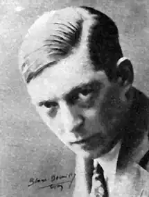
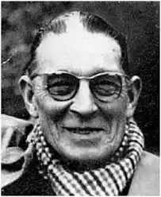

ГАБРІЄЛЬ ШЕВАЛЬЄ
Відомий французький прозаїк Габрівль Шевальє народився 1895 року в Ліоні, в сім'ї юриста. З цим містом, пов'язане, власне, все його життя. Він добре знав свій рідний ліонський край, його людей, побут і минуле; тут він скінчив мистецьку школу, готуючись стати художником, хоч натомість довелося працювати замолоду комівояжером — агентом фірми, що торгувала мотоциклами,— тут-таки розпочалась і тривала протягом кількох десятиріч його досить багатогранна літературна діяльність.
Першу світову війну Шевальє був на фронті звичайним солдатом, і враження цих років знайшли відображення в одному з перших його романів — "Страх". Про подальше його життя чимало можемо довідатись із низки автобіографічних романів, об'єднаних у цикл "Заспокоєні спогади" ("Дюран-комівояжер", "Шляхи самітності", "Клариса Вернон" та інші). З цих творів виразно вимальовується постать самого автора — реаліста за природою обдарований, людини, що гостро відчуває вади буржуазної цивілізації, де над усе ціниться "ієрархія грошей" (вислів із роману "Дюран-комівояжер"), людини, що розуміє, як важко в цьому суспільстві залишатися чесніш і незневіреним. Але найхарактерніші свої творчі риси — іронію і сарказм, дотепну й дошкульну спостережливість у поєднанні з ліричними нотками — Шевальє виявив у славнозвісному соціально-сатиричному романі "Клошмерль" (1934), Твір цей неодноразово перевидавався у Франції та в інших країнах, його перекладено багатьма мовами; за мотивами цього роману створено кінофільм "Скандал у Клошмерлі", що з успіхом ішов і на радянському екрані. "Клошмерль" — твір дуже цікавий тим, що разючу соціальну критику на провінційно-буржуазний побут та звичаї, на кар'єристів-політиканів часів третьої республік тут подано крізь своєрідну призму чисто галльського гумору й дотепності аж до фривольності. Традиції невимушеного й нескутого жодними святенницькими догмами замилування в звичайних життєвих утіхах мають у французів глибоке й давнє коріння: адже Франція — батьківщина Франсуа Рабле і Анатоля Франса. Отож і Шевальє — маскуючись нід простакуватого провінціала, часом— недорікуватого, а частіше глузливого — пише про своїх клошмерлян, у центрі життя яких жінки, вино й плітки, пише, не криючись, про все, часом балансуючи на грані естетично виправданого, але ніде не став в позу циніка чи натураліста. Відвертість автора-оповідача — це мистецький прийом, це специфічна "творча маска", що допомагає йому бути більш нищівним у соціальному плані, гротеск його мав сатиричне спрямування, а іронія часом доходить до болючого сарказму. "Легковажна" форма роману лише відтінює його глибинний серйозний зміст, і тоді гумор відступав на задній план, а перед читачем постають поважні життєві проблеми в усій їх складності. Основні герої роману — це вагомі сатиричні символи: бурхлива "діяльність" мера Бартелемі П'вшю, "хитрого чоловіка, що вмів видобувати користь з усього й усіх", представника "лівої" нібито партії, котрий в ім'я поступу збагачує Клошмерль на громадський пісуар, становить ущипливу пародію на псевдорадикалізм мало-містечкових діячів-демагогів. Домігшись кінець кінцем спорудження аж таких самих убиралень у Клошмерлі (а сам тим часом ставши вже сенатором і через дочку поріднившися з зубожілою аристократією), "демократ" П'вшю заявляє: "Досить уже реформ... Ми боролись у свій час, а після нас боротимуться інші. Треба дати людям час перетравити поступ". Цей прикінцевий акорд (П'єшю виступає і в першому, і в останньому — десять років згодом — епізодах роману) немовби унаочнює перед читачем справжню природу буржуазного кар'єризму, демагогії та лицемірства. Не менш місткими символами виступають у творі стара панна Шюстина Пюте — втілення святенницької псевдоцнотливості (життя її обертається па трагедію саме внаслідок викривленого розуміння моральних засад); баронеса де Куртебіш — запекла консерваторка, жіпка, яка свого часу скуштувала всіх життєвих насолод, а тепер уміло випихає "в люди" нездару-зятя; потар Жіродо — представник містечкової "опозиції", облудник і скупій, котрий саме через цю скупість, померши, вчинив ночувано добродійство для своєї рідні (бо залишив їй чималий спадок); учитель і секретар мерії Тафардсль — шкільпий педант і муніципальний базікало, ущерть натоптаний високодумними словами... Роман "Клошмерль" становить вершину творчості Г. Шевальє. Пробуючи після успіху "Клошмерля" Божолейського знову писати в цьому самому ключі (роман "Клошмерль Вавілонський", 1951), він створював тільки невиразні копії свого шедевра. З інших сатиричних творів Шевальє варто ще відзначити антисолдафонський сатиричний роман "Маленький генерал" (1951). Осібне місце у творчості Г. Шевальє посідав його невелика повість "Моя маленька Ласочка" (1940) —твір підкреслено ліричний, пройнятий теплими емоціями, характерний глибоким проникненням у психологію маленької дівчинки, життя якої її старший друг, що від імені його ведеться розповідь, простежує протягом кількох років. Прикметно, що безпосередність і щирість взаємин оповідача з дівчинкою та й дітей між собою не допускають дволикості й голого розрахунку, через що інтонації цього твору так само далекі від інтонацій клошмерльських, як далеко відстоять одпа від одної природність і фальш... Перу Габрівля Шевальє належать також ряд п'єс ("Маскарад", 1948 та "Мандрівник", 1953), есеїстичних творів, праць історичного характеру.